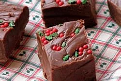

Aunt Teen's Creamy Chocolate Fudge

Description
Step by step recipe of aunt's recipe for fudge from allrecipes.com.
Ingredients
- 1 (7 ounce) jar marshmallow creme
- 1 ½ cups white sugar
- ⅔ cup evaporated milk
- ¼ cup butter
- ¼ teaspoon salt
- 2 cups milk chocolate chips
- 1 cup semisweet chocolate chips
- ½ cup chopped nuts
- 1 teaspoon vanilla extract
Steps
- Line an 8x8 inch pan with aluminum foil. Set aside.
- In a large saucepan over medium heat, combine marshmallow cream, sugar,
evaporated milk, butter and salt.
- Bring to a full boil, and cook for 5 minutes, stirring constantly.
- Remove from heat and pour in semisweet chocolate chips and milk chocolate chips.
- Stir until chocolate is melted and mixture is smooth.
- Stir in nuts and vanilla.
- Pour into prepared pan.
- Chill in refrigerator for 2 hours, or until firm.